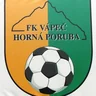

Posledný zápasA-mužstvo
 TJ Považan Pruskédomáci
TJ Považan PruskédomáciVýsledok 0:4
 OŠK Slovan Beckovhostia
OŠK Slovan BeckovhostiaVýhrapolčas 0:2
Návrh webu · nie je to oficiálna stránka klubu
VI. liga Sever, 12. miesto zo 14
Posledný zápasA-mužstvo
TJ Považan PruskédomáciVýsledok 0:4
OŠK Slovan BeckovhostiaVýhrapolčas 0:2
2–1–10výhry, remízy a prehry vo všetkých súťažiach, skóre 22:50
VI. liga Sever
| # | Tím | Z | V | R | P | Skóre | B |
|---|---|---|---|---|---|---|---|
| 1 | 12 | 9 | 3 | 0 | 45:7 | 30 | |
| 2 | 12 | 10 | 0 | 2 | 37:11 | 30 | |
| 3 |  TJ Vápeč Horná Poruba | 12 | 7 | 2 | 3 | 37:18 | 23 |
| 4 | 12 | 6 | 3 | 3 | 18:13 | 21 | |
| 5 | 12 | 6 | 2 | 4 | 24:19 | 20 | |
| 6 | 12 | 6 | 1 | 5 | 29:24 | 19 | |
| 7 | 12 | 5 | 3 | 4 | 20:25 | 18 | |
| 8 | 12 | 5 | 2 | 5 | 25:14 | 17 | |
| 9 | 12 | 4 | 1 | 7 | 26:30 | 13 | |
| 10 | 12 | 4 | 0 | 8 | 16:40 | 12 | |
| 11 | 12 | 3 | 1 | 8 | 23:41 | 10 | |
| 12 | 12 | 2 | 1 | 9 | 21:43 | 7 | |
| 13 | 12 | 1 | 1 | 10 | 11:47 | 4 | |
| 14 | 0 | 0 | 0 | 0 | 0:0 | 0 |
Hráči, ktorí v kalendárnom roku 2026 nastúpili alebo boli v nominácii na zápas (podľa Sportnetu).